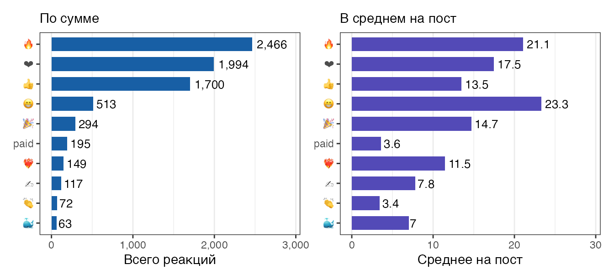
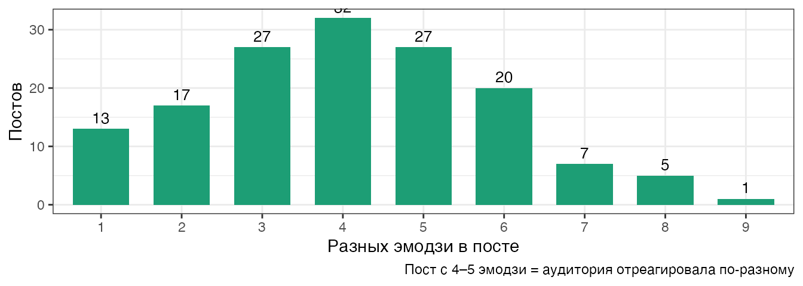
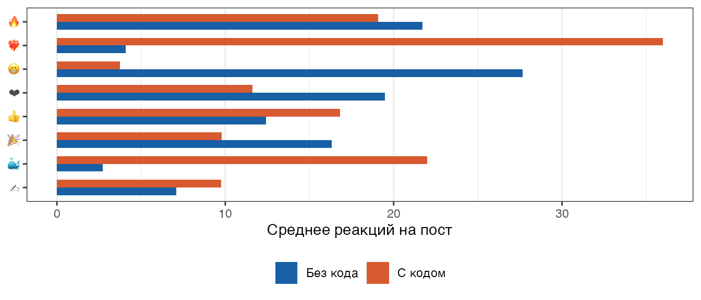
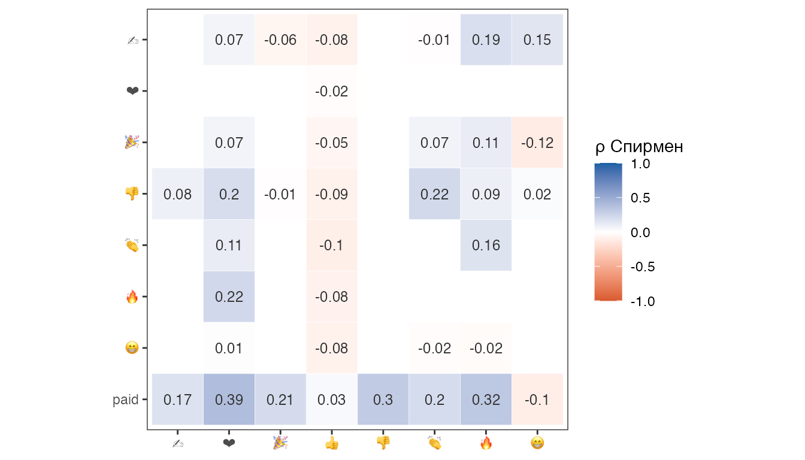
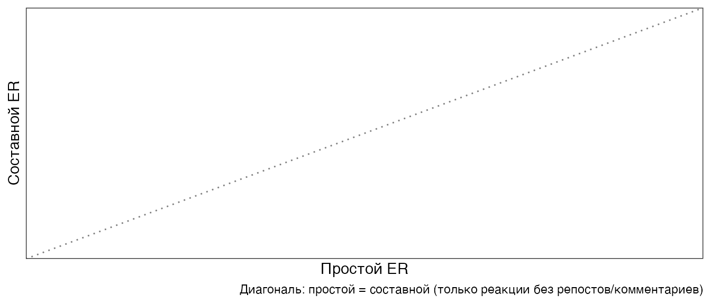
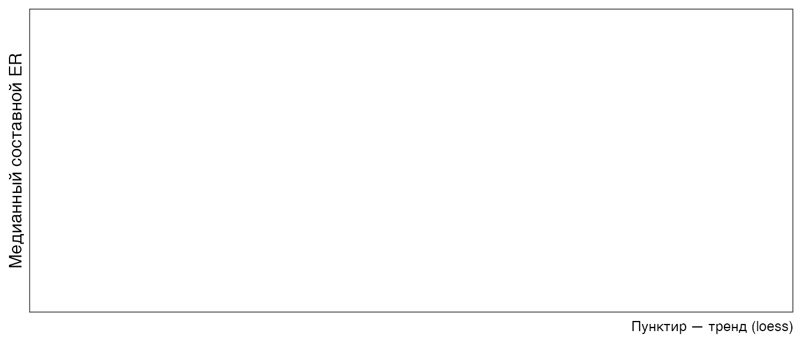

library(tidyverse)
library(lubridate)
library(jsonlite)
library(scales)
library(patchwork)
library(corrr) # install.packages("corrr")
library(ragg) # install.packages("ragg")
`%||%` <- function(x, y) if (is.null(x)) y else xОхват и лайки — разные вещи. 👍 говорит «ок», 🤯 говорит «я не ожидал этого», а комментарий — «я готов потратить время на разговор». Ниже разбираем каждый сигнал отдельно.
Парсинг: реакции в длинный формат
Telegram хранит реакции как список [{type: "👍", count: 15}, ...]. Разворачиваем в tidy-формат: одна строка = один тип реакции на один пост.
# Тип эмодзи: в разных версиях экспорта лежит в разных полях
extract_emoji <- function(r) {
tp <- r[["type"]] %||% ""
if (tp != "" && tp != "emoji") return(tp) # тип и есть эмодзи
r[["emoji"]] %||% r[["value"]] %||% "?" # старый формат
}
# Комментарии: field бывает reply_count, replies$count, или отсутствует
extract_comments <- function(m) {
rc <- m[["reply_count"]] %||%
{rp <- m[["replies"]]; if (is.list(rp)) rp[["count"]] else NULL} %||%
0L
as.integer(rc)
}
# Базовые поля поста
parse_msg_base <- function(m) {
if (!identical(m[["type"]], "message")) return(NULL)
tibble(
id = as.integer(m$id),
date = ymd_hms(m$date %||% NA_character_),
views = as.integer(m$views %||% 0L),
forwards = as.integer(m$forwards %||% 0L),
comments = extract_comments(m),
has_code = {
ents <- m$text_entities %||% list()
any(map_chr(ents, \(e) e[["type"]] %||% "") %in% c("pre", "code"))
}
)
}
# Реакции: длинный формат
parse_reactions_long <- function(m) {
reacts <- m$reactions %||% list()
if (length(reacts) == 0) return(NULL)
map_dfr(reacts, \(r) tibble(
msg_id = as.integer(m$id),
date = ymd_hms(m$date %||% NA_character_),
emoji = extract_emoji(r),
count = as.integer(r[["count"]] %||% 0L)
))
}
# Основная функция чтения экспорта
read_tg_export <- function(path = "result.json") {
msgs <- read_json(path)$messages
list(
posts = map_dfr(msgs, parse_msg_base),
reacts = map_dfr(msgs, parse_reactions_long)
)
}if (file.exists("result.json")) {
dat <- read_tg_export("result.json")
message("Загружен реальный экспорт")
} else {
dat <- simulate_channel()
message("result.json не найден — используем симуляцию")
}
posts <- dat$posts |> filter(!is.na(date))
# Защита: реальный экспорт может не содержать реакций вообще
if (is.null(dat$reacts) || ncol(dat$reacts) == 0) {
reacts <- tibble(msg_id = integer(), date = as.POSIXct(NA_character_)[-1],
emoji = character(), count = integer())
} else {
reacts <- dat$reacts |> filter(!is.na(date), count > 0)
}
# Итоговые реакции на пост (для join'ов)
if (nrow(reacts) > 0) {
post_totals <- reacts |>
group_by(msg_id) |>
summarise(total_reactions = sum(count), n_emoji = n_distinct(emoji))
} else {
post_totals <- tibble(msg_id = integer(), total_reactions = integer(), n_emoji = integer())
}
posts <- posts |>
select(-any_of("total_reactions")) |>
left_join(post_totals, by = c("id" = "msg_id")) |>
mutate(
total_reactions = coalesce(total_reactions, 0L),
n_emoji = coalesce(n_emoji, 0L),
er_simple = if_else(views > 0, total_reactions / views, NA_real_),
er_composite = if_else(views > 0,
(total_reactions + 5 * forwards + 10 * comments) / views,
NA_real_)
)Какие реакции ставят читатели?
R-код
emoji_summary <- reacts |>
group_by(emoji) |>
summarise(
total = sum(count),
posts = n_distinct(msg_id),
avg = total / posts
) |>
slice_max(total, n = 10) |>
mutate(emoji = fct_reorder(emoji, total))
p1 <- ggplot(emoji_summary, aes(x = total, y = emoji)) +
geom_col(fill = "#185FA5", width = .7) +
geom_text(aes(label = comma(total)), hjust = -.15, size = 3.5) +
scale_x_continuous(labels = comma,
limits = c(0, max(emoji_summary$total) * 1.18)) +
labs(x = "Всего реакций", y = NULL, subtitle = "По сумме") +
theme_bw() + theme(panel.grid.major.y = element_blank())
p2 <- ggplot(emoji_summary, aes(x = avg, y = emoji)) +
geom_col(fill = "#534AB7", width = .7) +
geom_text(aes(label = round(avg, 1)), hjust = -.15, size = 3.5) +
scale_x_continuous(limits = c(0, max(emoji_summary$avg) * 1.25)) +
labs(x = "Среднее на пост", y = NULL, subtitle = "В среднем на пост") +
theme_bw() + theme(panel.grid.major.y = element_blank())
p1 | p2
R-код
posts |>
filter(total_reactions > 0) |>
count(n_emoji) |>
ggplot(aes(x = factor(n_emoji), y = n)) +
geom_col(fill = "#1D9E75", width = .7) +
geom_text(aes(label = n), vjust = -.5, size = 3.5) +
labs(x = "Разных эмодзи в посте", y = "Постов",
caption = "Пост с 4–5 эмодзи = аудитория отреагировала по-разному") +
theme_bw()
Профиль реакций по типу контента
Разные темы вызывают разные эмоции: R-туториалы собирают 🔥🤓, симуляции — 🤯, мета-посты — 🎉.
R-код
if ("topic" %in% names(reacts)) {
heat_data <- reacts |>
group_by(topic, emoji) |>
summarise(avg = mean(count), .groups = "drop") |>
group_by(emoji) |>
mutate(avg_z = scale(avg)[,1]) |> # z-нормировка внутри эмодзи
ungroup()
ggplot(heat_data, aes(x = topic, y = emoji, fill = avg_z)) +
geom_tile(colour = "white", linewidth = .5) +
geom_text(aes(label = round(avg, 1)), size = 3, colour = "grey20") +
scale_fill_gradient2(
low = "#f0f4ff", mid = "#9BBFE0", high = "#185FA5", midpoint = 0,
guide = "none"
) +
scale_x_discrete(labels = \(x) str_replace_all(x, "_", "\n")) +
labs(x = NULL, y = NULL,
caption = "Цвет = z-нормировка по строке. Число = среднее реакций на пост.") +
theme_bw() +
theme(panel.grid = element_blank(),
axis.text.x = element_text(size = 8))
} else {
cat("Поле topic недоступно в реальном экспорте — добавь ручную разметку тем.")
}Поле topic недоступно в реальном экспорте — добавь ручную разметку тем.R-код
reacts |>
left_join(select(posts, id, has_code), by = c("msg_id" = "id")) |>
filter(!is.na(has_code)) |>
group_by(has_code, emoji) |>
summarise(avg = mean(count), .groups = "drop") |>
mutate(type = if_else(has_code, "С кодом", "Без кода")) |>
group_by(emoji) |>
mutate(total_avg = sum(avg)) |>
ungroup() |>
slice_max(total_avg, n = 16) |> # топ-8 эмодзи × 2 типа
ggplot(aes(x = avg, y = fct_reorder(emoji, total_avg), fill = type)) +
geom_col(position = "dodge", width = .65) +
scale_fill_manual(values = c("С кодом" = "#D85A30", "Без кода" = "#185FA5")) +
labs(x = "Среднее реакций на пост", y = NULL, fill = NULL) +
theme_bw() +
theme(legend.position = "bottom", panel.grid.major.y = element_blank())
Корреляция между реакциями
Какие эмодзи ставят вместе? Это показывает, есть ли «кластеры» аудитории.
R-код
react_wide <- reacts |>
group_by(msg_id, emoji) |>
summarise(count = sum(count), .groups = "drop") |>
pivot_wider(id_cols = msg_id, names_from = emoji,
values_from = count, values_fill = 0L)
# Оставляем только эмодзи с достаточным числом наблюдений
min_posts <- nrow(react_wide) * .10
keep_emoji <- react_wide |>
summarise(across(-msg_id, \(x) sum(x > 0))) |>
pivot_longer(everything()) |>
filter(value >= min_posts) |>
pull(name)
cor_data <- react_wide |>
select(all_of(keep_emoji)) |>
correlate(method = "spearman", quiet = TRUE) |>
shave()
cor_long <- cor_data |>
pivot_longer(-term, names_to = "emoji2", values_to = "r") |>
filter(!is.na(r))
ggplot(cor_long, aes(x = emoji2, y = fct_rev(term), fill = r)) +
geom_tile(colour = "white") +
geom_text(aes(label = round(r, 2)), size = 3.2, colour = "grey20") +
scale_fill_gradient2(
low = "#D85A30", mid = "white", high = "#185FA5",
midpoint = 0, limits = c(-1, 1), name = "ρ Спирмен"
) +
coord_equal() +
labs(x = NULL, y = NULL) +
theme_bw() +
theme(panel.grid = element_blank())
R-код
# Кластеры на основе корреляций
cor_matrix <- react_wide |>
select(all_of(keep_emoji)) |>
cor(method = "spearman", use = "pairwise.complete.obs")
if (nrow(cor_matrix) >= 3) {
clust <- hclust(as.dist(1 - cor_matrix))
groups <- cutree(clust, k = min(3, nrow(cor_matrix) - 1))
cat("\n**Кластеры реакций:**\n\n")
split(names(groups), groups) |>
imap_chr(\(emj, i) paste0("- Кластер ", i, ": ", paste(emj, collapse = " "))) |>
cat(sep = "\n")
}Кластеры реакций:
- Кластер 1: 👍
- Кластер 2: ❤ 🔥 👏 🎉 👎 paid
- Кластер 3: 😁 ✍
Комментарии
R-код
has_comments <- sum(posts$comments > 0)
if (has_comments > 5) {
ggplot(posts, aes(x = comments)) +
geom_histogram(binwidth = 1, fill = "#1D9E75", colour = "white", alpha = .85) +
geom_vline(xintercept = median(posts$comments[posts$comments > 0]),
linetype = "dashed", colour = "#D85A30") +
scale_x_continuous(breaks = scales::pretty_breaks()) +
labs(x = "Комментариев", y = "Постов",
caption = paste0(has_comments, " постов из ", nrow(posts),
" (", percent(has_comments / nrow(posts)), ") имеют хотя бы один комментарий")) +
theme_bw()
} else {
cat("> Поле comments недоступно в экспорте.\n",
"> Для канала без linked discussion group его не будет.\n",
"> Привяжи группу обсуждений в настройках канала, и оно появится в следующем экспорте.")
}> Поле comments недоступно в экспорте.
> Для канала без linked discussion group его не будет.
> Привяжи группу обсуждений в настройках канала, и оно появится в следующем экспорте.R-код
posts |>
filter(comments > 0) |>
slice_max(comments, n = 10) |>
transmute(
Дата = format(date, "%d.%m.%Y"),
Охват = comma(views),
Реакции = comma(total_reactions),
Комментарии= comments,
Репосты = forwards,
ER = percent(er_simple, accuracy = .1)
) |>
knitr::kable(caption = "Топ-10 постов по числу комментариев")| Дата | Охват | Реакции | Комментарии | Репосты | ER |
|---|
R-код
if (sum(posts$comments > 0) > 5) {
posts |>
filter(total_reactions > 0) |>
ggplot(aes(x = total_reactions, y = comments)) +
geom_point(aes(colour = has_code), alpha = .55, size = 2) +
geom_smooth(method = "lm", se = TRUE, colour = "grey40",
linetype = "dashed", linewidth = .8) +
scale_colour_manual(values = c("TRUE" = "#D85A30", "FALSE" = "#185FA5"),
labels = c("TRUE" = "с кодом", "FALSE" = "без кода")) +
labs(x = "Реакции", y = "Комментарии", colour = NULL,
caption = paste0("ρ = ",
round(cor(posts$total_reactions, posts$comments,
method = "spearman", use = "complete.obs"), 2))) +
theme_bw() +
theme(legend.position = "bottom")
}Составной ER: взвешенная вовлечённость
Лайк, репост, комментарий — разные усилия читателя. Взвесим:
\[ \text{ER}_{\text{composite}} = \frac{\text{реакции} + 5 \times \text{репосты} + 10 \times \text{комментарии}}{\text{охват}} \]
Веса условные, но отражают логику: комментарий требует максимум усилий и даёт охват через ответы, репост приводит новую аудиторию, лайк — минимальный сигнал.
R-код
posts |>
filter(!is.na(er_simple), !is.na(er_composite),
er_simple < quantile(er_simple, .99, na.rm = TRUE)) |>
ggplot(aes(x = er_simple, y = er_composite)) +
geom_point(aes(colour = has_code), alpha = .5, size = 1.8) +
geom_abline(slope = 1, intercept = 0, linetype = "dotted", colour = "grey50") +
geom_smooth(method = "lm", se = FALSE, colour = "#D85A30",
linewidth = .9, linetype = "dashed") +
scale_x_continuous(labels = percent) +
scale_y_continuous(labels = percent) +
scale_colour_manual(values = c("TRUE"="#D85A30","FALSE"="#185FA5"),
labels = c("TRUE"="с кодом","FALSE"="без кода")) +
labs(x = "Простой ER", y = "Составной ER", colour = NULL,
caption = "Диагональ: простой = составной (только реакции без репостов/комментариев)") +
theme_bw() +
theme(legend.position = "bottom")
R-код
posts |>
filter(!is.na(er_composite)) |>
mutate(month = floor_date(date, "month")) |>
group_by(month) |>
summarise(
med_er = median(er_composite),
avg_er = mean(er_composite),
n = n(),
.groups = "drop"
) |>
ggplot(aes(x = month)) +
geom_line(aes(y = med_er), colour = "#185FA5", linewidth = 1.1) +
geom_point(aes(y = med_er, size = n), colour = "#185FA5") +
geom_smooth(aes(y = med_er), method = "loess", se = FALSE,
colour = "#D85A30", linetype = "dashed", linewidth = .8) +
scale_y_continuous(labels = percent) +
scale_size_continuous(range = c(2, 6), guide = "none") +
labs(x = NULL, y = "Медианный составной ER",
caption = "Пунктир — тренд (loess)") +
theme_bw()
R-код
posts |>
filter(!is.na(er_composite), views >= 200) |>
slice_max(er_composite, n = 10) |>
transmute(
Дата = format(date, "%d.%m.%Y"),
Охват = comma(views),
Реакции = comma(total_reactions),
Репосты = forwards,
Комментарии = comments,
`ER простой` = percent(er_simple, accuracy = .1),
`ER составной`= percent(er_composite, accuracy = .1),
Код = if_else(has_code, "✓", "")
) |>
knitr::kable(caption = "Топ-10 по составному ER (мин. 200 просмотров)")| Дата | Охват | Реакции | Репосты | Комментарии | ER простой | ER составной | Код |
|---|
Интерпретация сигналов
| Эмодзи | Что говорит читатель | Тип контента |
|---|---|---|
| 👍 | Одобряю, полезно | Базовый сигнал, везде |
| ❤️ | Люблю этот контент | Личный стиль, серии |
| 🔥 | Горячо, хочу ещё | Практические R-tips |
| 🤯 | Не ожидал, сломал мозг | Симуляции, парадоксы |
| 🤓 | Нердово, но мне нравится | Математика, теория |
| 👏 | Хорошая работа | Разборы, лонгриды |
| 🎉 | Событие, хочу поучаствовать | Конкурсы, анонсы |
| 😱 | Это неожиданно или тревожно | p-хакинг, кризис науки |
TipБыстрый вывод
Если постам не хватает 🤯 — значит, мало контринтуитивного контента. Если мало 🔥 — мало практически применимого. Если мало комментариев вообще — возможно, стоит добавить вопрос в конце поста.
NoteСвязанные материалы
- Общий анализ канала — охваты, лучшее время, рост
- Парадокс Симпсона — пример контента, который собирает 🤯